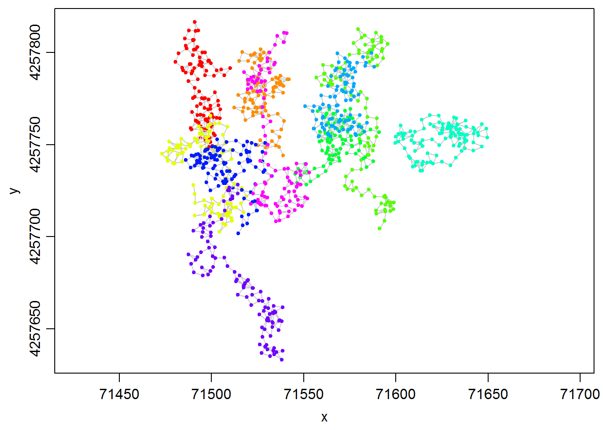
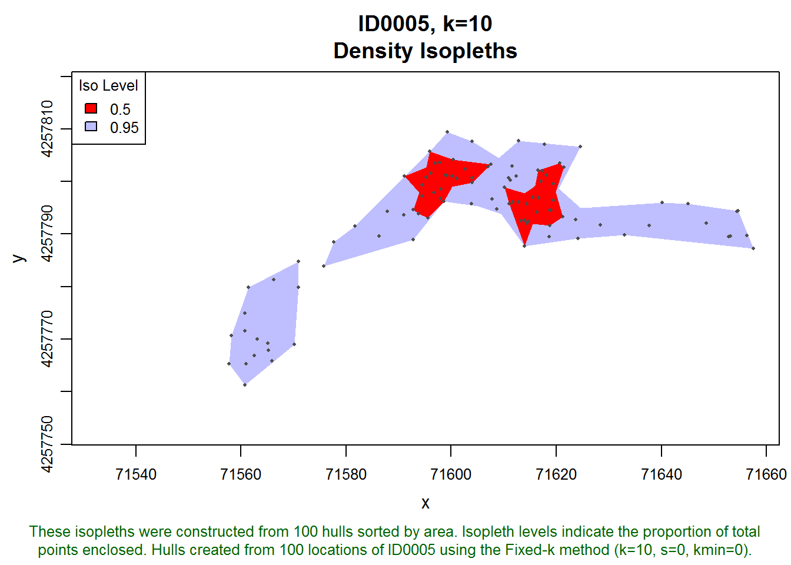
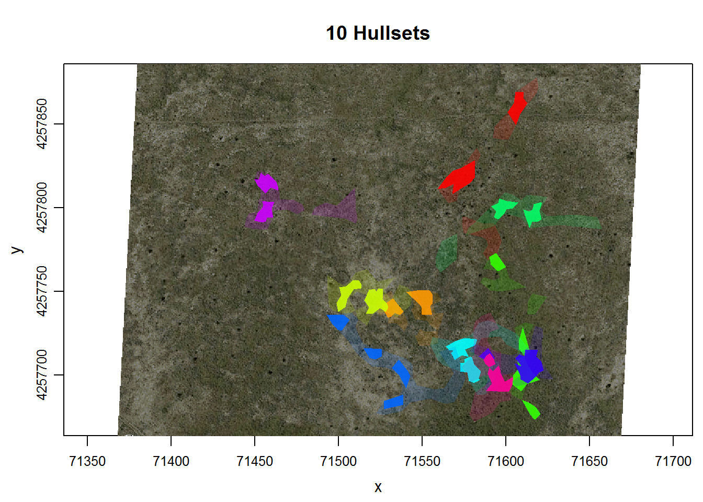
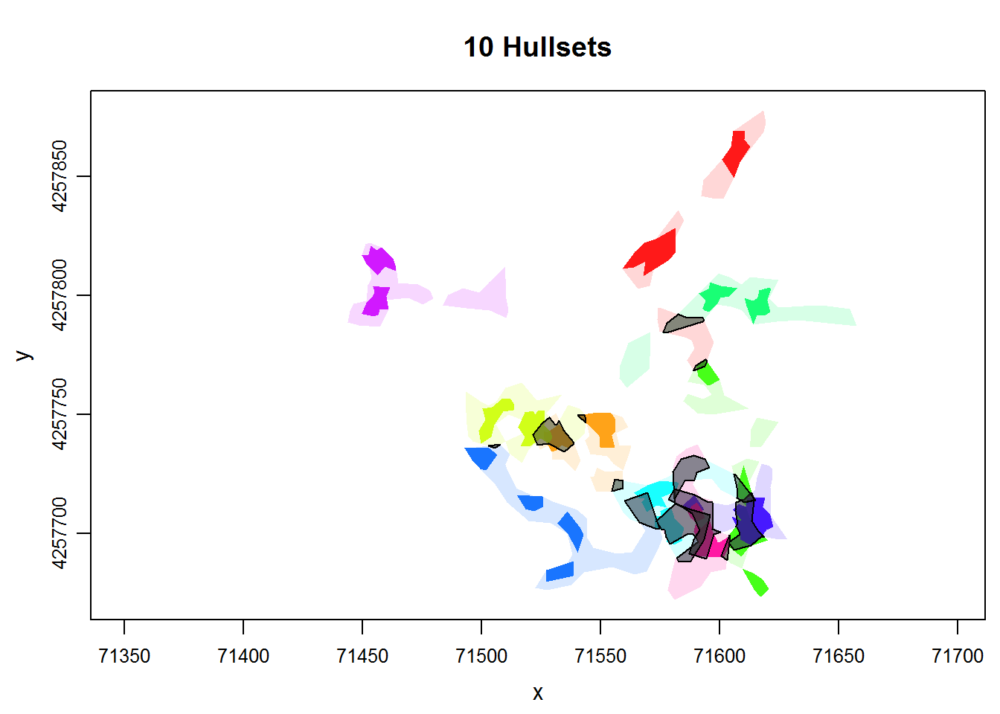

In this tip, we demonstrate how to compute the area of overlap for pairs of hullsets (e.g., indviduals) using the lhs.iso.overlap function from the tlocoh.dev package.
First let’s create some dummy movement data. We’ll create random walks for 10 indviduals, with 100 points each.
step_size <- 5
xys_all <- NULL
num_id <- 10
num_pts <- 100
for (i in 1:num_id) {
id <- sprintf("ID%04d", i)
theta <- runif(num_pts, min = 0, max = 2 *pi)
start_loc <- runif(2, min=500, max=600)
xys_this <- data.frame(id=id,
x=start_loc[1] + step_size * cumsum(cos(theta)),
y=start_loc[2] + step_size * cumsum(sin(theta)))
xys_all <- rbind(xys_all, xys_this)
}
head(xys_all)## id x y
## 1 ID0001 503.9631 571.4433
## 2 ID0001 499.3660 569.4768
## 3 ID0001 500.8815 564.7120
## 4 ID0001 500.2178 559.7562
## 5 ID0001 498.9221 564.5854
## 6 ID0001 500.5292 559.8507For a bit of realism, we’ll offset the locations so they’ll appear in Kansas.
xys_all <- transform(xys_all, x = x + 71000, y = y + 4257200)Next, we can convert our points to a locoh-xy object. Let’s first load the tlocoh package.
require(tlocoh)## Loading required package: tlocoh
## Loading required package: sp
## T-LoCoH for R (version 1.35.0)
## URL: http://tlocoh.r-forge.r-project.org/
## Bug reports: tlocoh@gmail.com## Make sure you're using version 1.35.00 or later.
packageVersion("tlocoh")## [1] '1.35.0'dummy.lxy <- xyt.lxy(xy=xys_all[ ,2:3],id=xys_all[ ,1], proj4string = CRS("+proj=utm +zone=14 +ellps=WGS84"))
plot(dummy.lxy, overlay=T, title.show=F)
To create hulls, we first identify nearest neighbors.
dummy.lxy <- lxy.nn.add(dummy.lxy, s=0, k=10, status=FALSE)
summary(dummy.lxy)## Summary of LoCoH-xy object: dummy.lxy
## ***Locations
## id num.pts dups
## ID0001 100 0
## ID0002 100 0
## ID0003 100 0
## ID0004 100 0
## ID0005 100 0
## ID0006 100 0
## ID0007 100 0
## ID0008 100 0
## ID0009 100 0
## ID0010 100 0
## ***Time span
## no times recorded
## ***Spatial extent
## ID0001
## x: 71480.5 - 71510.1
## y: 4257747.2 - 4257816.7
## ID0002
## x: 71512.4 - 71542
## y: 4257744.2 - 4257801.7
## ID0003
## x: 71473.1 - 71519
## y: 4257702.7 - 4257765.8
## ID0004
## x: 71557 - 71598.9
## y: 4257704.6 - 4257812.7
## ID0005
## x: 71545.6 - 71591
## y: 4257728.4 - 4257769.3
## ID0006
## x: 71599.7 - 71649.6
## y: 4257735.8 - 4257766.1
## ID0007
## x: 71550.8 - 71588.4
## y: 4257754.3 - 4257799.8
## ID0008
## x: 71486 - 71532.7
## y: 4257701.8 - 4257752.9
## ID0009
## x: 71487.6 - 71538.7
## y: 4257633.2 - 4257728.4
## ID0010
## x: 71517.7 - 71553.1
## y: 4257708.4 - 4257810.8
## proj: +proj=utm +zone=14 +ellps=WGS84
## ***Ancilliary Variables:
## -none-
## ***Nearest-neighbor set(s):
## 1 ID0001|vmax|s0|n100|kmax10|rmax4.3|amax27.7
## 2 ID0002|vmax|s0|n100|kmax10|rmax3.6|amax24.7
## 3 ID0003|vmax|s0|n100|kmax10|rmax4.1|amax24.7
## 4 ID0004|vmax|s0|n100|kmax10|rmax4.8|amax32.2
## 5 ID0005|vmax|s0|n100|kmax10|rmax3.7|amax25.6
## 6 ID0006|vmax|s0|n100|kmax10|rmax3|amax24.1
## 7 ID0007|vmax|s0|n100|kmax10|rmax4.3|amax29.9
## 8 ID0008|vmax|s0|n100|kmax10|rmax3.3|amax22.8
## 9 ID0009|vmax|s0|n100|kmax10|rmax3.6|amax26.8
## 10 ID0010|vmax|s0|n100|kmax10|rmax4|amax28.1Next, we make a hullset object. We’ll add the iso.add=TRUE argument to create default density isopleths at the same time and specify the isopleth levels we want to use with iso.levels.
dummy.lhs <- lxy.lhs(dummy.lxy, k=10, s=0, iso.add=TRUE, iso.levels = c(0.5, 0.95), status=FALSE)
#summary(dummy.lhs)Let’s inspect isopleths for one of the individuals.
plot(dummy.lhs, iso=TRUE, id="ID0005", allpts=T, col.allpts="gray30", cex.allpts=0.4)
Now we’ll plot an overlay of the isopleths for all of the individuals.
plot(dummy.lhs, iso=TRUE, overlay=TRUE, col.overlay.byhullset=TRUE, gmap="hybrid")## Downloading common background image...Done
Some of these virtual indviduals appear to overlap. Let’s find which ones using the function lhs.iso.overlap. This function will take all pairs of individuals, and find the area of intersection. This function is currently in the toloch.dev package, which is the package for ‘experimental’ functions for T-LoCoH.
## Make sure you're using version 1.3.0 or later.
if (!require(tlocoh.dev)) install.packages("tlocoh.dev", repos="http://R-Forge.R-project.org")## Loading required package: tlocoh.dev
## Development features for T-LoCoH
## Version 1.3.0
## URL: http://tlocoh.r-forge.r-project.org/
## Please send bug reports and feedback to: tlocoh@gmail.comrequire(tlocoh.dev)
packageVersion("tlocoh.dev")## [1] '1.3.0'The function we want to use is lhs.iso.overlap. This function will look at all pairs of hullsets in dummy.lhs (which in our case correspond to different individuals), and compute the area of intersection.
library(rgeos)## rgeos version: 0.3-11, (SVN revision 479)
## GEOS runtime version: 3.4.2-CAPI-1.8.2 r3921
## Linking to sp version: 1.1-1
## Polygon checking: TRUEoverlap_stats <- lhs.iso.overlap(dummy.lhs, iso.level=0.95, status=FALSE)
names(overlap_stats)## [1] "spdf" "overlap_area" "overlap_prop"lhs.iso.overlap returns a named list with three elements. The spdf element is a SpatialPolygonsDataFrame contained the polygons of intersection.
plot(dummy.lhs, iso=TRUE, overlay=TRUE, col.overlay.byhullset=TRUE)
plot(overlap_stats$spdf, col="#32323280", add=TRUE)
The data table (or attribute table) for the areas of intersection of two ids contains the area expressed in map units, as well as a proportion of the two hullsets.
head(overlap_stats$spdf@data)## hs1name hs2name iso_level area area_prhs1 area_prhs2
## 1 ID0001.pts100.k10.s0.kmin0 ID0003.pts100.k10.s0.kmin0 0.95 117.550593 0.186894730 0.138830330
## 2 ID0001.pts100.k10.s0.kmin0 ID0008.pts100.k10.s0.kmin0 0.95 3.033839 0.004823527 0.003562057
## 3 ID0002.pts100.k10.s0.kmin0 ID0008.pts100.k10.s0.kmin0 0.95 6.381660 0.009442199 0.007492764
## 4 ID0002.pts100.k10.s0.kmin0 ID0010.pts100.k10.s0.kmin0 0.95 212.910251 0.315018498 0.202157148
## 5 ID0003.pts100.k10.s0.kmin0 ID0008.pts100.k10.s0.kmin0 0.95 124.601709 0.147157883 0.146295973
## 6 ID0003.pts100.k10.s0.kmin0 ID0009.pts100.k10.s0.kmin0 0.95 112.677183 0.133074706 0.123978251The SpatialPolygonsDataFrame can also be exported for use in a GIS program.
The overlap_area and overlap_prop elements contain matrices of the area of intersection expressed as i) map units and ii) proportions of the areas of isopleths. We can inspect the comparison matrices. First we’ll look at the area of intersection. You’ll note that this matrix is symmetrical around the diagonal.
overlap_stats$overlap_area$iso95## ID0001 ID0002 ID0003 ID0004 ID0005 ID0006 ID0007 ID0008 ID0009 ID0010
## ID0001 0.000000 0.00000 117.5506 0.0000 0.00000 0 0.0000 3.033839 0.000000 0.00000
## ID0002 0.000000 0.00000 0.0000 0.0000 0.00000 0 0.0000 6.381660 0.000000 212.91025
## ID0003 117.550593 0.00000 0.0000 0.0000 0.00000 0 0.0000 124.601709 112.677183 0.00000
## ID0004 0.000000 0.00000 0.0000 0.0000 16.87670 0 139.1920 0.000000 0.000000 0.00000
## ID0005 0.000000 0.00000 0.0000 16.8767 0.00000 0 227.7802 0.000000 0.000000 47.27948
## ID0006 0.000000 0.00000 0.0000 0.0000 0.00000 0 0.0000 0.000000 0.000000 0.00000
## ID0007 0.000000 0.00000 0.0000 139.1920 227.78016 0 0.0000 0.000000 0.000000 0.00000
## ID0008 3.033839 6.38166 124.6017 0.0000 0.00000 0 0.0000 0.000000 5.966482 16.94726
## ID0009 0.000000 0.00000 112.6772 0.0000 0.00000 0 0.0000 5.966482 0.000000 0.00000
## ID0010 0.000000 212.91025 0.0000 0.0000 47.27948 0 0.0000 16.947263 0.000000 0.00000Finally, we’ll look at the matrix which expresses the area of overlap as a proportion of i) the first hullset (on the vertical), and ii) the second hullset (on the horizontal). This matrix is not symmetrical.
overlap_stats$overlap_prop$iso95## ID0001 ID0002 ID0003 ID0004 ID0005 ID0006 ID0007 ID0008 ID0009 ID0010
## ID0001 0.000000000 0.000000000 0.1868947 0.00000000 0.00000000 0 0.0000000 0.004823527 0.0000000 0.00000000
## ID0002 0.000000000 0.000000000 0.0000000 0.00000000 0.00000000 0 0.0000000 0.009442199 0.0000000 0.31501850
## ID0003 0.138830330 0.000000000 0.0000000 0.00000000 0.00000000 0 0.0000000 0.147157883 0.1330747 0.00000000
## ID0004 0.000000000 0.000000000 0.0000000 0.00000000 0.01856652 0 0.1531289 0.000000000 0.0000000 0.00000000
## ID0005 0.000000000 0.000000000 0.0000000 0.02538068 0.00000000 0 0.3425560 0.000000000 0.0000000 0.07110306
## ID0006 0.000000000 0.000000000 0.0000000 0.00000000 0.00000000 0 0.0000000 0.000000000 0.0000000 0.00000000
## ID0007 0.000000000 0.000000000 0.0000000 0.19040517 0.31158780 0 0.0000000 0.000000000 0.0000000 0.00000000
## ID0008 0.003562057 0.007492764 0.1462960 0.00000000 0.00000000 0 0.0000000 0.000000000 0.0070053 0.01989793
## ID0009 0.000000000 0.000000000 0.1239783 0.00000000 0.00000000 0 0.0000000 0.006564896 0.0000000 0.00000000
## ID0010 0.000000000 0.202157148 0.0000000 0.00000000 0.04489161 0 0.0000000 0.016091336 0.0000000 0.00000000The lhs.iso.overlap function from the tlocoh.dev package makes it easy to compute the area of intersection of many pairs of hullsets. While not as nuanced as other measures of association, homerange intersection can give you idea of which pairs of individuals share space.
T-LoCoH Tips. If you find this tip useful, or have feedback or another question on how to use T-LoCoH, please contact the package author. (c) 2015